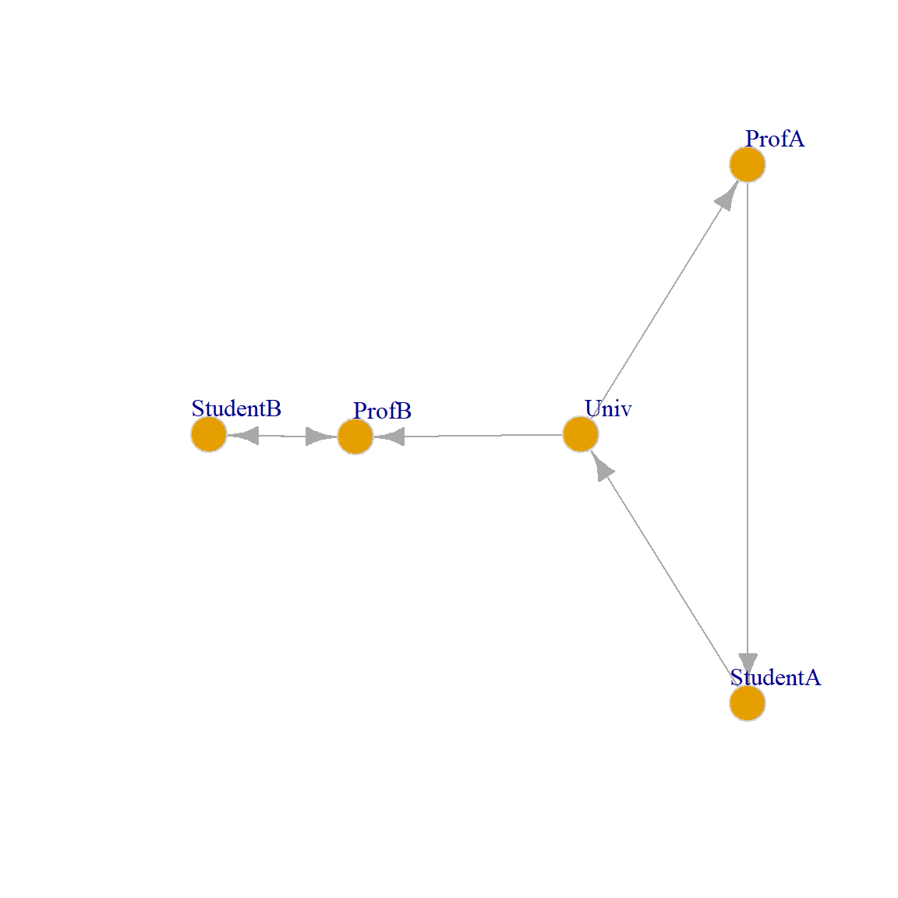
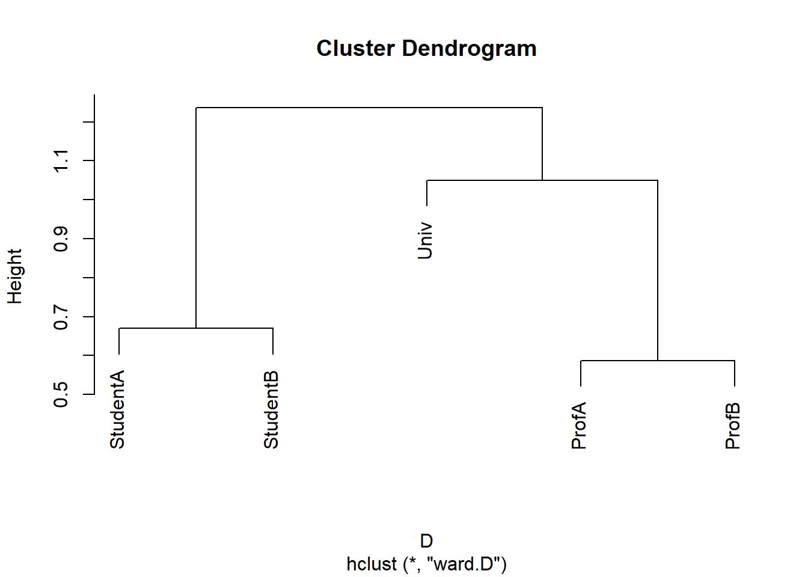
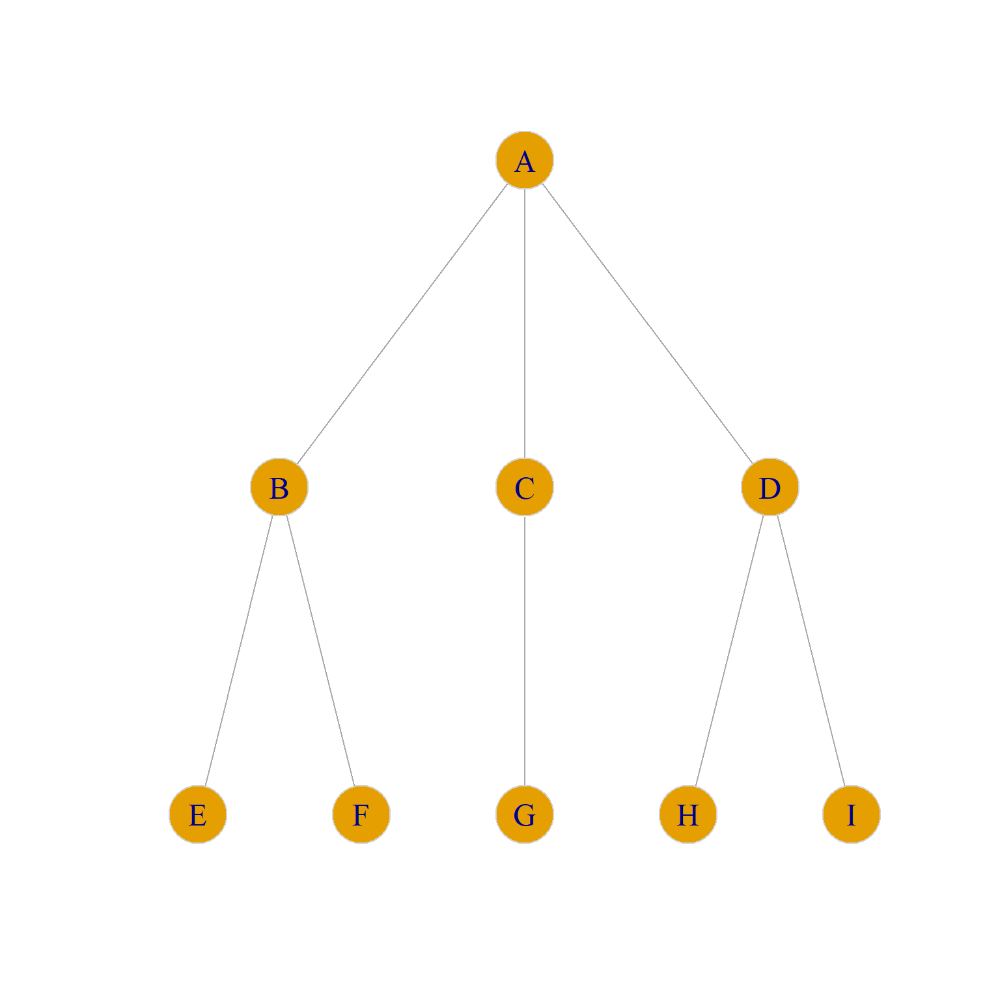
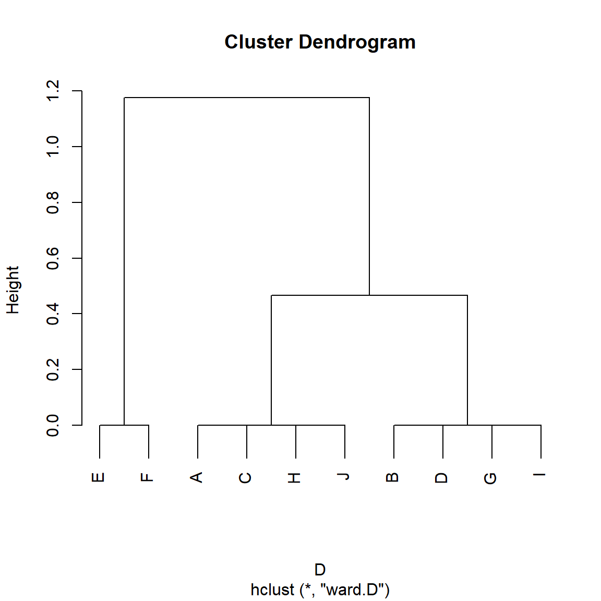

SimRank <- function(w, alpha = 0.8, beta = 1) {
do <- rowSums(w) #outdegree vector
di <- colSums(w) #indegree vector
n <- nrow(w) #number of nodes in the graph
z <- diag(1, n, n) #diagonal matrix (nodes are maximally similar to themselves)
if(is.null(rownames(w)) == TRUE) {rownames(w) <- 1:nrow(w)} #checking if matrix has row names
if(is.null(colnames(w)) == TRUE) {colnames(w) <- 1:nrow(w)} #checking if matrix has column names
rownames(z) <- rownames(w) #naming similarity matrix rows
colnames(z) <- colnames(w) #naming similarity matrix columns
onei <- apply(w, 1, function(x){which(x == 1)}, simplify = FALSE) #out-neighbors list
inei <- apply(w, 2, function(x){which(x == 1)}, simplify = FALSE) #in-neighbors list
delta <- 1
while(delta > 1e-10) { #run while delta is bigger than a tiny number
z.o <- z #old similarity matrix at t-1
for(i in 1:n) {
for(j in 1:n) {
if (i == j) {next} #skip when i and j are the same
min.di <- min(di[i], di[j])
min.do <- min(do[i], do[j])
if (min.di != 0 & min.do != 0) { #both nodes have in and out neighbors
a <- alpha/(di[i] * di[j]) #indegree weight
b <- sum(as.matrix(z.o[inei[[i]], inei[[j]]])) #sum of similarity scores of in-neighbors in previous iteration
c <- alpha/(do[i] * do[j]) #outdegree weight
d <- sum(as.matrix(z.o[onei[[i]], onei[[j]]])) #sum of similarity scores of out-neighbors in previous iteration
z[i,j] <- beta*a*b + (1-beta)*c*d #updating current similarity matrix at t
}
if (min.di != 0 & min.do == 0) { #one node has no out-neighbors
a <- alpha/(di[i] * di[j]) #indegree weight
b <- sum(as.matrix(z.o[inei[[i]], inei[[j]]])) #sum of similarity scores of in-neighbors in previous iteration
z[i,j] <- beta*a*b #updating current similarity matrix at t
}
if (min.di == 0 & min.do != 0) { #one node has no in-neighbors
c <- alpha/(do[i] * do[j]) #outdegree weight
d <- sum(as.matrix(z.o[onei[[i]], onei[[j]]])) #sum of similarity scores of out-neighbors in previous iteration
z[i,j] <- (1-beta)*c*d #updating current similarity matrix at t
}
} #end j for loop
} #end i for loop
delta <- abs(sum(abs(z)) - sum(abs(z.o))) #difference between similarity matrices at t and t-1
} #end while loop
return(z) #return similarity matrix after convergence
} #end functionRole Similarities
The Role Problem
So far, we have defined distances and similarities primarily as functions of the number of shared neighbors between two nodes. Structural equivalence is an idealized version of this, obtaining whenever people share exactly the same set of neighbors.
Yet, similarities based on local neighborhood information have only been criticized (e.g., by Borgatti and Everett (1992)) for not quite capturing the sociological intuition behind the idea of a role, which is usually what they are deployed for.
That is, two doctors don’t occupy the same role because they treat the same set of patients (in fact, this would be weird); instead, the set of doctors occupy the same role to the extent they treat a set of actors in the same (or similar) role: Namely, patients, regardless of whether those actors are literally the same or not. Note that all the similarity notions studied in the local similarity lecture have structural equivalence as the limiting case of maximum similarity. So they are still based on the idea that nodes are similar to the extent they connect to the same others.
This worry led social network analysts to attempt to generalize the concept of structural equivalence using a less stringent algebraic definition, resulting in a proliferation of different types of equivalence, such as automorphic or regular equivalence (Borgatti and Everett 1992). Unfortunately, none of this work (unlike the work on structural equivalence) led to useful or actionable tools for data analysis, with some even concluding that certain definitions of equivalence (such as regular equivalence) are unlikely to be found in any interesting substantive setting.
A better approach here is to use a more relaxed notion of similarity to arrive at a more general definition that captures our role-based intuitions. One strategy is to define similarity in a more “generalized” way as follows: nodes are similar to the extent they connect to similar others, with the restriction that we can only use endogenous (structural connectivity) information—like with structural equivalence or common-neighbor approaches—to define everyone’s similarity (no exogenous attribute stuff).
Jeh and Widom’s SimRank
As Jeh and Widom (2002) note, this approach does lead to a coherent generalization of the idea of similarity for nodes in graphs because we can just define similarity recursively and iterate through the graph until the similarity scores stop changing.1
More specifically, they propose to measure the similarity between two nodes \(i\) and \(j\) at each iteration step \(t\) (\(s_{ij}(t)\)) using the formula:
\[ s_{ij}(t) = \frac{\alpha}{d_i d_j} \sum_{k \in N(i)} \sum_{l \in N(j)} s_{kl}(t-1) \tag{1}\]
So the similarity between two nodes at step \(t\) is just the sum of the pairwise similarities between each of their neighbors (computed in the previous step, \(t-1\)), weighted by the ratio of a free parameter \(\alpha\) (a number between zero and one) to the product of their in-degrees (to take a weighted average).
This measure nicely captures the idea that nodes are similar to the extent that they are both connected to people who are themselves similar. Note that it doesn’t matter whether these in-neighbors are shared between the two nodes (the summation occurs over each pair of nodes formed by crossing the set \(p\) + \(q\) against \(p\) + \(r\) as defined in the local similarity lecture), whether they are themselves neighbors, which deals with the doctor/patient problem we referred to earlier.
A function that implements this idea looks like:
This function takes an adjacency matrix (w) as input and returns a generalized similarity matrix (z) as output. Note that at the initial time step \(t = 0\), the similarity matrix z is initialized to the identity matrix \(\mathbf{I}_{n \times n}\) of the same dimensions as the adjacency matrix, saying that initially all nodes are maximally similar to themselves (which makes sense).
The above is an implementation of the generalized version of SimRank developed by Zhao, Han, and Sun (2009), called P-Rank, which accounts for similarities between in- and out-neighbors (weighted by the \(\beta\) parameter). Jeh and Widom’s (2002) original version of SimRank (which only takes into account in-neighbor similarities) is obtained when \(\beta = 1\) (the default in the SimRank function above).
Let us see how it works using the toy example that Jeh and Widom (2002, 540, Figure 2) used in their original paper, shown in Figure 1, which is intended to represent a set of web pages at a university. There is a link from the main University page to the two professors ’ pages, and a link from the professors to the students’ pages. In addition, “Student B” has a link on their webpage to the corresponding professor, and “Student A” has a link to the main university page on their webpage.

We can now test the SimRank function on the toy example:
Univ ProfA ProfB StudentA StudentB
Univ 1.000 0.000 0.132 0.000 0.034
ProfA 0.000 1.000 0.414 0.000 0.106
ProfB 0.132 0.414 1.000 0.042 0.088
StudentA 0.000 0.000 0.042 1.000 0.331
StudentB 0.034 0.106 0.088 0.331 1.000Which reproduces the pairwise similarity numbers reported by Jeh and Widom (2002, 540, Figure 2) in their original paper (with \(\alpha = 0.8\)).
We can transform the similarity matrix into a distance matrix and then perform a hierarchical clustering to obtain the roles:

Which, as we can see, recovers the Professor, Student, and University Roles in the network.
Let’s try it out on more realistic data using the Pulp Fiction graph:
library(networkdata)
library(stringr) #using stringr to change names from all caps to title case
g <- movie_559
V(g)$name <- str_to_title(V(g)$name)
V(g)$name[which(V(g)$name == "Esmarelda")] <- "Esmeralda" #fixing misspelled name
g <- delete_vertices(g, degree(g) < 2) #deleting low degree vertices
A <- as.matrix(as_adjacency_matrix(g))
S <- SimRank(A)
round(S[1:5, 1:5], 2) Brett Buddy Butch Capt Koons Ed Sullivan
Brett 1.00 0.17 0.17 0.17 0.17
Buddy 0.17 1.00 0.17 0.27 0.47
Butch 0.17 0.17 1.00 0.17 0.17
Capt Koons 0.17 0.27 0.17 1.00 0.27
Ed Sullivan 0.17 0.47 0.17 0.27 1.00We can transform the generalized similarities to distances and plot:

The plot suggests a division into five major node clusters. On the left, we have the people from the diner scene (e.g., Pumpkin and Honey Bunny), followed by a small cluster from the sex dungeon scene (Maynard, The Gimp, and Zed). We have the main character cluster in the middle (Jules, Mia, Vincent, Butch, Marsellus), then the cleanup scene (Jimmie, The Wolf), followed by a cluster of smaller characters.
Does SimRank Escape the Role Problem?
Recall that we turned to SimRank because it promised to solve Borgatti and Everett’s (1992) role problem, or the idea that nodes can play the same role in the network even when they don’t share any neighbors.
Now, we know from Equation 1 that SimRank uses information about the neighborhoods of the two nodes, but relaxes the local structural-similarity assumption that these neighbors need to be shared.
However, it is clear that nodes that have completely disjoint neighborhoods would be considered by SimRank to be low similarity even though they could be playing the same roles.2 So maybe SimRank doesn’t solve the doctor/patient problem after all.


To build some intuition, consider the graph in Figure 2 (a), which is a directed version of a toy example from Borgatti and Everett (1992, 14, Figure 7(a)). Going by the standard of structural equivalence criterion (see here), we would say that the sets of structurally equivalent nodes are {J, H}, {G, I}, {D, B}, {A, C}, because each pair in brackets has identical in and out neighborhoods. Nodes {E} and {F} should be in their own singleton sets, as they have distinct out-neighborhoods even though they share the same in-neighborhood (each other).
We can ascertain this by reviving our old Euclidean distance function:
d.euclid <- function(w) {
n <- nrow(w)
z <- matrix(0, n, n)
for (i in 1:n) {
for (j in i:n) {
if (i == j) {next}
d.ij <- 0
for (k in 1:n) {
if (i != k & j != k) {d.ij <- d.ij + ((w[i,k] - w[j,k])^2 + (w[k,i] - w[k,j])^2)}
}
z[i,j] <- sqrt(d.ij)
z[j,i] <- sqrt(d.ij)
}
}
rownames(z) <- rownames(w)
colnames(z) <- colnames(w)
return(z)
}And then using it to cluster the nodes in the Borgatti-Everett graph:
A <- as.matrix(as_adjacency_matrix(g))
E <- d.euclid(A)
E <- as.dist(E) #transforming E to a dist object
h.res <- hclust(E, method = "ward.D2")
plot(h.res)
We can see in Figure 3 that, indeed, the good old Euclidean distance finds the set of structurally equivalent nodes in the graph (Burt 1976), although it assigns nodes \(E\) and \(F\) to the same cluster when they should be in their own cluster.
Yet, going by our intuitive idea that two nodes occupy the same position if they are structurally similar (regardless of whether they share the same set of neighbors) we want to say that nodes {J, H, A, C} occupy the same role, as do nodes {G, I, D, B} and nodes {E, F}. So, going by this abstract idea of role, we would expect there to be three role positions in the graph, not five as suggested by the structural equivalence approach.
However, standard approaches to structural equivalence, such as Euclidean distance, will not capture these higher-level similarities; they will only capture the lower-level similarity based on local neighborhood overlap that structural equivalence algorithms are designed to extract.
Can SimRank do better? Let’s see:

We specify \(\beta = 0.5\) so that SimRank gives equal weight to in and out-neighbors. However, we can see in Figure 4 that Zhao et al.’s (2009) generalized version of SimRank does not identify the more general role classes in the Borgatti-Everett graph. It does correctly assigns {E}, {F} to their separate group, but it creates two larger similarity clusters containing nodes {A, B, C, D} and {G, H, I, J} which make sense from the point of view of proximity or cohesion but not from the point of view of role similarity independently of proximity (Borgatti and Everett 1992).
RoleSim
We can see that the problem is that nodes like {J, H, A, C} in Figure 2 (a) are not structurally equivalent (since J and H don’t share any neighbors with A and C). Instead, they are automorphically equivalent (see Borgatti and Everett (1992) for relevant discussion).
While automorphic equivalence is a terrible name coming from the depths of graph theory, it has a simple explanation. Two nodes are automorphically equivalent if we could swap the labels of any pair (e.g., J for A and A for J) in the relevant set in Figure 2 (a), and nothing would change in the graph. That is, every graph theoretic quantity we could compute would remain the same (density, average shortest path length, diameter, etc.).
It is easy to see that nodes inside the set {A, C, J, H} pass this test in Figure 2 (a). For instance, the graph in Figure 2 (b) has the same properties as Figure 2 (a), even though J is now a neighbor of B and D, and A is a neighbor of G and I. Such an evil twin graph is called an automorphism of the original graph.
Of course, this strict graph theoretic notion of automorphic equivalence is too strong for most practical applications outside of a toy graph like Figure 2 (a), since it only returns binary outcomes: Either two nodes are in the same automorphically equivalent set (\(s_{ij} = 1\)), or they are not (\(s_{ij} = 0\)), with nothing in between.
What we need instead is a metric of automorphic similarity that admits to gradations so that two nodes could be more or less automorphically similar, with the idea being that the more automorphically similar two nodes are, the less disruption there is to the graph structure when they are exchanged, and with the Platonic ideal case being no disruption whatsoever for strictly automorphically equivalent nodes.
So the problem with a SimRank style measure is that it is not sensitive to automorphic similarity, as it is only sensitive to structural similarity, and we need a measure that is.
Fortunately, such a measure exists, and it’s called RoleSim (Jin, Lee, and Li 2014). It can be seen as a generalization of SimRank with the difference being that rather than computing the similarity between \(i\) and \(j\) at iteration \(t\) as equivalent to the average similarity of \(i\) and \(j\)’s neighbors at iteration \(t-1\), it instead computes the similarity between \(i\) and \(j\) at iteration \(t\) as the matching between the most similar neighbor pairs at iteration \(t-1\).
Such a maximum matching is defined as finding the top \(k\) similarity scores between \(i\) and \(j\)’s neighbors at \(t-1\) (where \(k\) is the minimum of the degrees of \(i\) and \(j\)) and adding them up.
In formulese:
\[ s_{ij}(t) = \beta \frac{\sum_{(k,l) \in M_{i,j}} s_{kl}(t-1)}{max(d_i, d_j)} + \left(1 - \beta\right) \tag{2}\]
Where \(\beta\) is a parameter chosen by the researcher with the restriction that \(0 \geq \beta \leq 1\).
Note that the sum of neighbor similarities in Equation 2 happens only among similarities in the matching set \(M_{i, j}\). The idea of a matching set between two pairs of nodes is simple.
Imagine a graph in which node A is connected to nodes {B, C, D} and node H is connected to nodes {I, J, K, L}. Now imagine that the hypothetical matrix below is a running similarity matrix at some iteration \(t\) between A’s and H’s neighbors:
I J K L
B 0.29 0.88 0.53 0.46
C 0.79 0.94 0.89 0.96
D 0.41 0.05 0.55 0.45A maximal matching selects the maximum numbers across the smallest dimension of the matrix (which in this case is the row dimension, as the matrix has three rows and four columns) and then adds them up.
B C D
0.88 0.96 0.55 [1] 2.39We can see that the maximum in row one, corresponding to node B, is 0.88 (the similarity between B and J), the maximum in row two, corresponding to node C, is 0.96 (the similarity between C and J), and the maximum in row three, corresponding to node D, is 0.55 (the similarity between D and K).
This means that the maximum matching for the neighbors of nodes A and H in this hypothetical example is \(0.88 + 0.96 + 0.55 = 2.39\), which would be the equivalent of the numerator in the fraction of Equation 2.
Because in a directed graph we have to worry about similarities between in and out neighbors, we modify Equation 2 like this:
\[ s_{ij}(t) = \beta \frac{\sum_{(k,l) \in M^{out}_{i,j}} s_{kl}(t-1) + \sum_{(k,l) \in M^{in}_{i,j}} s_{kl}(t-1)}{max(d^{out}_i, d^{out}_j) + max(d^{in}_i, d^{in}_j)} + \left(1 - \beta\right) \tag{3}\]
Where \(M^{out}_{ij}\) is the maximum matching set between \(i\) and \(j\)’s out neighbors and \(M^{in}_{ij}\) is the matching set between \(i\) and \(j\)’s in-neighbors. This is the implementation of RoleSim found in Shao et al. (2019).
Here’s a modification of the SimRank function that does all of the above:
RoleSim <- function(w, beta = 0.5) {
do <- rowSums(w) #outdegree vector
di <- colSums(w) #indegree vector
n <- nrow(w) #number of nodes in the graph
z <- matrix(1, n, n) #all ones matrix (nodes are maximally similar to themselves)
if(is.null(rownames(w)) == TRUE) {rownames(w) <- 1:nrow(w)} #checking if matrix has row names
if(is.null(colnames(w)) == TRUE) {colnames(w) <- 1:nrow(w)} #checking if matrix has column names
rownames(z) <- rownames(w) #naming similarity matrix rows
colnames(z) <- colnames(w) #naming similarity matrix columns
onei <- apply(w, 1, function(x){which(x == 1)}, simplify = FALSE) #out-neighbors list
inei <- apply(w, 2, function(x){which(x == 1)}, simplify = FALSE) #in-neighbors list
delta <- 1
while(delta > 1e-10) { #run while delta is bigger than a tiny number
z.o <- z #old similarity matrix at t-1
for(i in 1:n) {
for(j in 1:n) {
if (i == j) {next} #skip if i = j
min.di <- min(di[i], di[j]) #minimum indegree between i an j
max.di <- max(di[i], di[j]) #maximum indegree between i an j
min.do <- min(do[i], do[j]) #minimum outdegree between i an j
max.do <- max(do[i], do[j]) #maximum outdegree between i an j
if (min.di != 0 & min.do != 0) { #both nodes have in and out-neighbors
k <- as.matrix(z.o[inei[[i]], inei[[j]]]) #creating sub-matrix of similarities between i and j's in-neighbors
d <- as.numeric(which(c(di[i], di[j]) == min.di)[1]) #selecting minimum of rows or columns of k
mu.i <- sum(apply(k, d, max)) #maximum in-neighbor similarity matching sum
k <- as.matrix(z.o[onei[[i]], onei[[j]]]) #creating sub-matrix of similarities between i and j's out-neighbors
d <- as.numeric(which(c(do[i], do[j]) == min.do)[1]) #selecting minimum of rows or columns of k
mu.o <- sum(apply(k, d, max)) #maximum out-neighbor similarity matching sum
z[i,j] <- (beta * (mu.o + mu.i)/(max.do + max.di)) + (1-beta) #updating similarity matrix
}
if (min.di != 0 & min.do == 0) { #one node has no out-neighbors
k <- as.matrix(z.o[inei[[i]], inei[[j]]]) #creating sub-matrix of similarities between i and j's in-neighbors
d <- as.numeric(which(c(di[i], di[j]) == min.di)[1]) #selecting minimum of rows or columns of k
mu.i <- sum(apply(k, d, max)) #maximum in-neighbor similarity matching sum
z[i,j] <- (beta * (mu.i/max.di)) + (1-beta) #updating similarity matrix
}
if (min.di == 0 & min.do != 0) { #one node has no in-neighbors
k <- as.matrix(z.o[onei[[i]], onei[[j]]]) #creating sub-matrix of similarities between i and j's out-neighbors
d <- as.numeric(which(c(do[i], do[j]) == min.do)[1]) #selecting minimum of rows or columns of k
mu.o <- sum(apply(k, d, max)) #maximum out-neighbor similarity matching sum
z[i,j] <- (beta * (mu.o/max.do)) + (1-beta) #updating similarity matrix
}
} #end i for loop
} #end j for loop
delta <- sum(abs(abs(z) - abs(z.o))) #difference between similarity matrices at t and t-1
} #end while loop
return(z) #return similarity matrix after convergence
} #end functionAnd now we apply it to the Borgatti/Everett graph:
S <- RoleSim(A)
D <- as.dist(1-S)
h.res <- hclust(D, method = "ward.D") #hierarchical clustering
plot(h.res)
And we can see in Figure 5 that, indeed, the RoleSim algorithm groups nodes in terms of their automorphic similarity rather than their structural similarity, with nodes {A, C, J, H} being put in the same class, as are nodes {B, D, G, I} and {E, F}.
We can see this clearly if we cut the dendrogram to return three clusters:
Here is the five cluster partition of the dendrogram in Figure 7:
Undirected Case
Hanneman & Riddle use the undirected graph in Figure 6 as another example where automorphic equivalence is relevant (the graph is taken from Wasserman and Faust (1994)). Using a (costly) algorithm that identifies the “orbits” of a graph (sets of automorphically equivalent nodes) they note that there are five such positions in Figure 6: Actors \(\{A\}\) (the “top” node), \(\{C\}\), and \(\{G\}\) occupying unique (singleton) positions, with \(\{B, D\}\) and \(\{E, F, H, I\}\) being sets of automorphically equivalent (exchangeable) nodes.

Fig Figure 7 shows the dendrogram corresponding to the rolesim partition for Figure 6, with \(\beta = 1.0\) (since the graph is undirected).

We can see that indeed, rolesim identifies the automorphically equivalent classes, assigning \(\{A, C, G\}\) to unique positions and grouping the relevant automorphically equivalent nodes into the expected classes. Here is the five cluster partition of the dendrogram in Figure 7:
Role problem solved!
CentSim
As we noted, automorphically equivalent nodes in a graph are completely exchangeable, meaning that we can swap them without changing anything we can compute at the graph level.
The same goes for any quantity we can compute at the node level, which means that automorphically equivalent nodes have the property of being graph-theoretically indistinguishable. That means that they will have the same score on any centrality measure we could compute on them.
So another approach to finding automorphically similar pairs of nodes in a graph is just to compute a bunch of node-level quantities, such as centrality measures, and count nodes as similar if their centrality measures are similar.
Li et al. (2015) built on this observation to compute a role similarity measure called CentSim on each pair of nodes in the graph, by comparing their centrality scores across various measures. Li et al.’s (2015) proposal is that the similarity between \(i\) and \(j\) is given by:
\[ s_{ij} = \frac{\sum_{k=1}^l \theta_k(i,j)}{l} \tag{4}\]
Where the function \(\theta_k\) defined on each pair of nodes \(i\), \(j\), is given by:
\[ \theta_k(i,j) = \frac{min\left[c_k(i), c_k(j)\right]}{max\left[c_k(i), c_k(j)\right]} \tag{5}\]
Where \(c_k(i)\) is the \(k^{th}\) centrality score computed on node \(i\).
So the idea is to compute a bunch of different centrality scores for each node, then compute the average ratio of the minimum to the maximum score for each pair.
Here’s a function that does that, using degree, closeness, betweenness, and eigenvector centrality:
cent.sim <- function(x) {
library(igraph)
c1 <- degree(x)
c2 <- harmonic_centrality(x)
c3 <- betweenness(x)
c4 <- eigen_centrality(x)$vector
n <- vcount(x)
min.max <- function(a, b) {
if (max(a, b) != 0) {r <- min(a, b)/max(a, b)}
else {r <- 1}
return(r)
}
z <- diag(1, n, n)
rownames(z) <- V(x)$name
colnames(z) <- V(x)$name
for(i in 1:n) {
for(j in i:n) {
w1 <- min.max(c1[i], c1[j])
w2 <- min.max(c2[i], c2[j])
w3 <- min.max(c3[i], c3[j])
w4 <- min.max(c4[i], c4[j])
z[i,j] <- (w1 + w2 + w3 + w4)/4
}
}
z[lower.tri(z)] <- t(z)[lower.tri(z)] #copying upper triangle into lower triangle
return(z)
}The cent.sim function takes an igraph graph object as input and returns a similarity matrix z as output.
Can CentSim find the automorphically equivalent classes in Figure 2 (a) that we are looking for? Let’s find out:
S <- cent.sim(g)
D <- as.dist(1-S)
h.res <- hclust(D, method = "ward.D") #hierarchical clustering
plot(h.res)
Indeed it does! As we can see in Figure 8, nodes {A, C, J, H} are put in the same class, as are nodes {B, D, G, I} and {E, F}.
Let us compare the clustering that we obtain in the Pulp Fiction network from a measure that is sensitive to automorphic similarity (like RoleSim) to the one we obtained using SimRank:
g <- movie_559
V(g)$name <- str_to_title(V(g)$name)
V(g)$name[which(V(g)$name == "Esmarelda")] <- "Esmeralda" #fixing misspelled name
g <- delete_vertices(g, degree(g) < 2) #deleting low degree vertices
A <- as.matrix(as_adjacency_matrix(g))
S <- RoleSim(A)
D <- as.dist(1-S)
h.res2 <- hclust(D, method = "ward.D") #hierarchical clustering
plot(h.res2)
We can see that the RoleSim partition is different from the one offered by SimRank. While the main clusters in the SimRank partition are organized by scene (e.g., all the characters in the diner scene appear together), the RoleSim partition actually organizes the characters according to more abstract roles. So the main characters {Jules, Vincent, Butch} form their own cluster, while {Marsellus, Mia, Pumpkin, Honey Bunny} are also assigned to a similarity cluster, despite not appearing in the same scenes.
References
Borgatti, Stephen P, and Martin G Everett. 1992. “Notions of Position in Social Network Analysis.” Sociological Methodology 22: 1–35.
Burt, Ronald S. 1976. “Positions in Networks.” Social Forces 55 (1): 93–122.
Jeh, Glen, and Jennifer Widom. 2002. “Simrank: A Measure of Structural-Context Similarity.” In Proceedings of the Eighth ACM SIGKDD International Conference on Knowledge Discovery and Data Mining, 538–43.
Jin, Ruoming, Victor E Lee, and Longjie Li. 2014. “Scalable and Axiomatic Ranking of Network Role Similarity.” ACM Transactions on Knowledge Discovery from Data (TKDD) 8 (1): 1–37.
Kusumoto, Mitsuru, Takanori Maehara, and Ken-ichi Kawarabayashi. 2014. “Scalable Similarity Search for SimRank.” In Proceedings of the 2014 ACM SIGMOD International Conference on Management of Data, 325–36.
Li, Longjie, Lvjian Qian, Victor E. Lee, Mingwei Leng, Mei Chen, and Xiaoyun Chen. 2015. “Fast and Accurate Computation of Role Similarity via Vertex Centrality.” In Web-Age Information Management, edited by Xin Luna Dong, Xiaohui Yu, Jian Li, and Yizhou Sun, 123–34. Springer International Publishing.
Shao, Yingxia, Jialin Liu, Shuyang Shi, Yuemei Zhang, and Bin Cui. 2019. “Fast de-Anonymization of Social Networks with Structural Information.” Data Science and Engineering 4 (1): 76–92.
Wasserman, Stanley, and Katherine Faust. 1994. “Social Network Analysis: Methods and Applications.”
Zhao, Peixiang, Jiawei Han, and Yizhou Sun. 2009. “P-Rank: A Comprehensive Structural Similarity Measure over Information Networks.” In Proceedings of the 18th ACM Conference on Information and Knowledge Management, 553–62.
Footnotes
Note the similarity (heh, heh) between this idea and the various status ranking algorithms for computing prestige scores.↩︎
In fact, Kusumoto, Maehara, and Kawarabayashi (2014) show that the
SimRankscore of two nodes tends towards zero as their geodesic distance increases.↩︎